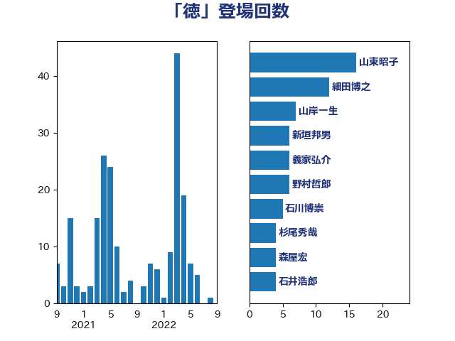

単語「徳」

| 山東昭子 | 自由民主党 | 16 回 |
| 細田博之 | 自由民主党 | 12 回 |
| 山岸一生 | 立憲民主党 | 7 回 |
| 新垣邦男 | 立憲民主党 | 6 回 |
| 義家弘介 | 自由民主党 | 6 回 |
| 野村哲郎 | 自由民主党 | 6 回 |
| 石川博崇 | 公明党 | 5 回 |
| 杉尾秀哉 | 立憲民主党 | 4 回 |
| 森屋宏 | 自由民主党 | 4 回 |
| 石井浩郎 | 自由民主党 | 4 回 |
| 鈴木馨祐 | 自由民主党 | 4 回 |
| 坂本哲志 | 自由民主党 | 3 回 |
| 渡辺博道 | 自由民主党 | 3 回 |
| 野田国義 | 立憲民主党 | 3 回 |
| 長島昭久 | 自由民主党 | 3 回 |
| 黄川田仁志 | 自由民主党 | 3 回 |
| 丸川珠代 | 自由民主党 | 2 回 |
| 佐々木さやか | 公明党 | 2 回 |
| 太田房江 | 自由民主党 | 2 回 |
| 宮崎雅夫 | 自由民主党 | 2 回 |
| 山口俊一 | 自由民主党 | 2 回 |
| 山本順三 | 自由民主党 | 2 回 |
| 岸信夫 | 自由民主党 | 2 回 |
| 新妻秀規 | 公明党 | 2 回 |
| 松野博一 | 自由民主党 | 2 回 |
| 舟山康江 | 国民民主党 | 2 回 |
| 若宮健嗣 | 自由民主党 | 2 回 |
| 金子恭之 | 自由民主党 | 2 回 |
| 青木一彦 | 自由民主党 | 2 回 |
| 高木かおり | 日本維新の会 | 2 回 |
| 佐藤信秋 | 自由民主党 | 1 回 |
| 佐藤英道 | 公明党 | 1 回 |
| 吉川ゆうみ | 自由民主党 | 1 回 |
| 堀内詔子 | 自由民主党 | 1 回 |
| 大塚耕平 | 国民民主党 | 1 回 |
| 大野敬太郎 | 自由民主党 | 1 回 |
| 安江伸夫 | 公明党 | 1 回 |
| 宗清皇一 | 自由民主党 | 1 回 |
| 宮路拓馬 | 自由民主党 | 1 回 |
| 小寺裕雄 | 自由民主党 | 1 回 |
| 小林史明 | 自由民主党 | 1 回 |
| 小林鷹之 | 自由民主党 | 1 回 |
| 小沢雅仁 | 立憲民主党 | 1 回 |
| 小里泰弘 | 自由民主党 | 1 回 |
| 山田太郎 | 自由民主党 | 1 回 |
| 山谷えり子 | 自由民主党 | 1 回 |
| 山際大志郎 | 自由民主党 | 1 回 |
| 島村大 | 自由民主党 | 1 回 |
| 平井卓也 | 自由民主党 | 1 回 |
| 平木大作 | 公明党 | 1 回 |
| 木原誠二 | 自由民主党 | 1 回 |
| 末松信介 | 自由民主党 | 1 回 |
| 梅谷守 | 立憲民主党 | 1 回 |
| 森英介 | 自由民主党 | 1 回 |
| 櫻井周 | 立憲民主党 | 1 回 |
| 水岡俊一 | 立憲民主党 | 1 回 |
| 江渡聡徳 | 自由民主党 | 1 回 |
| 池田佳隆 | 自由民主党 | 1 回 |
| 浜口誠 | 国民民主党 | 1 回 |
| 浜地雅一 | 公明党 | 1 回 |
| 海江田万里 | 立憲民主党 | 1 回 |
| 牧島かれん | 自由民主党 | 1 回 |
| 磯崎仁彦 | 自由民主党 | 1 回 |
| 福岡資麿 | 自由民主党 | 1 回 |
| 稲津久 | 公明党 | 1 回 |
| 細田健一 | 自由民主党 | 1 回 |
| 西村康稔 | 自由民主党 | 1 回 |
| 西銘恒三郎 | 自由民主党 | 1 回 |
| 赤池誠章 | 自由民主党 | 1 回 |
| 赤澤亮正 | 自由民主党 | 1 回 |
| 野田聖子 | 自由民主党 | 1 回 |
| 金田勝年 | 自由民主党 | 1 回 |
| 高橋はるみ | 自由民主党 | 1 回 |